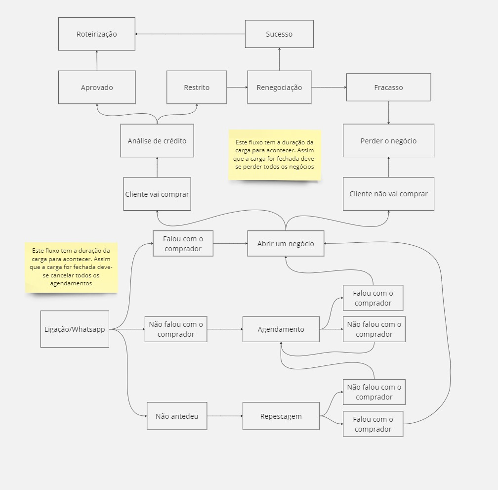

Plataforma de treinamento
Como fazer login
Solicite seu login junto ao suporte. Com seu e-mail de login e senha anotados acesse o site do Tangerin. Veja no video a seguir:
Como ultilizar sua Pipeline
A utilização da Pipeline em um CRM (Customer Relationship Management, ou Gestão de Relacionamento com o Cliente) é uma prática fundamental para gerenciar e acompanhar o progresso das interações com os clientes ao longo do ciclo de vendas. Aqui estão alguns passos gerais sobre como utilizar sua Pipeline no CRM:
Entendimento do Processo de Vendas:
Antes de ultilizar a Pipeline, é crucial entender o seu processo de vendas. Identifique as etapas pelas quais um lead passa, desde o contato inicial até a conclusão da venda. Clique aqui para visualizar a imagem abaixo.

-
Criando um négocio
Na sua pipeline você irá movimentar seus negócios, para que possa gerenciar seu cronograma de contato com o cliente. E o primeiro passo para isso é criar um negócio, veja o video explicativo a seguir:
Atribuição de Leads e Oportunidades:
Certifique-se de que cada lead seja atribuído à etapa apropriada da Pipeline. Por exemplo, um lead recém-contactado pode começar na etapa "Contato inicial".